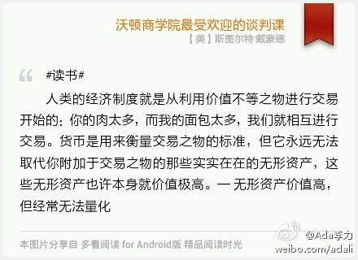
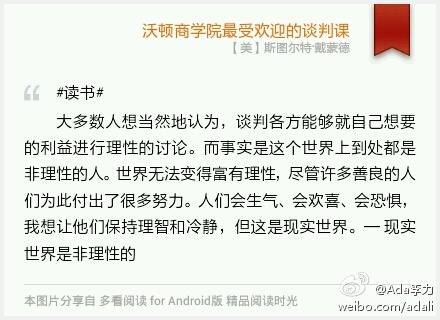
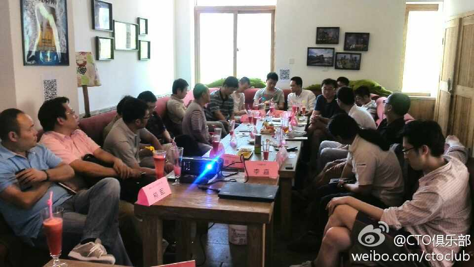
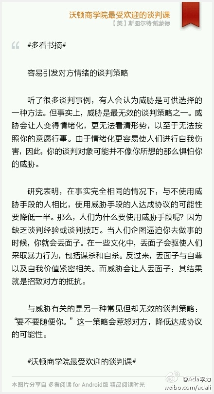

#读书# 人类的经济制度就是从利用价值不等之物进行交易开始的：你的肉太多，而我的面包太多，我们就相互进行交易。货币是用来衡量交易之物的标准，但它永远无法取代你附加于交易之物的那些实实在在的无形资产，这些无形资产也许本身就价值极高。— 无形资产价值高，但经常无法量化 
#读书# 大多数人想当然地认为，谈判各方能够就自己想要的利益进行理性的讨论。而事实是这个世界上到处都是非理性的人。世界无法变得富有理性，尽管许多善良的人们为此付出了很多努力。人们会生气、会欢喜、会恐惧，我想让他们保持理智和冷静，但这是现实世界。— 现实世界是非理性的 
小区散步，有个站路中间，没栓狗绳的小京巴冲我狂吠，还冲我冲过来，我只能站着不动，它主人连连对狗呵斥：“别动，别动”，之后走过来把狗抱走了。至始至终，没对我说一句话。以后谁再说养狗的人，都是有爱心的人，我估计只能狂吐了。
吸毒是兴趣，法律禁止是吸毒人难正常生活工作，给别人造成负担；吸烟也是兴趣，公共场所禁烟是因为吸烟会毒害不吸烟的人；喝酒也是兴趣，而对酒驾处罚那么严，因为酒驾这种行为出事故率极高，会危害别人生命。@Ada李力:我从来不觉得兴趣有什么高低贵贱，喜欢看书的，就比喜欢吃喝，要高尚吗？这也是胡扯。但对兴趣以及带来的行为进行评判还是有个准则，就是看这个兴趣是否妨碍了他人。脱离这个，谈兴趣的优劣，都是没素质的人。
大家也是抱着取经的态度来的。@CTO俱乐部:这次下午茶是电子商务专委会的第一次聚会，是海尔商城的CTO盛国军提议召开的，他本来是想在聚会上向其它的电商取取经，结果开始的半个小时，大家都在问海尔商城的方方面面。
这次活动@carol依 策划组织得不错。以后可以尝试更多的活动形式，比如10人晚餐。@CTO俱乐部:CTO俱乐部下午茶活动特点：1.圆桌型会场，参会者充分讨论交流; 2. 每个人都有铭牌，大家都是主角；3. 入场时加入微信群，方便大家会后交流; 4. 可以没有PPT, 但有现场速记，摄像或者录音，让更多人了解讨论内容。5. 限制参会人数，20人以内。 
狗没什么错，是养狗的太差劲，今天收获一堆类似吐槽。//@莺声燕语_Lilian:不能同意的更多。有次回家，电梯门刚要合上，一男人带一大狗生挤上来。等我发现那是条红眼睛半人多高的黑色杜宾，而且是主人悠然站后面狗站我旁边，此时电梯门已合上了。。。 做噩梦都没梦到过这种场景[愤怒]@Ada李力:小区散步，有个站路中间，没栓狗绳的小京巴冲我狂吠，还冲我冲过来，我只能站着不动，它主人连连对狗呵斥：“别动，别动”，之后走过来把狗抱走了。至始至终，没对我说一句话。以后谁再说养狗的人，都是有爱心的人，我估计只能狂吐了。
#多看书摘# 容易引发对方情绪的谈判策略 听了很多谈判事例，有人会认为威胁是可供选择的一种方法。但事实上，威胁是最无效的谈判策略之一。威胁会让人变得情绪化，更无法看清形势，以至于无法按照你的意愿行事。由于情绪化更容易使人们进行自我伤害，因此，你的谈判对象可能并不像你所... 